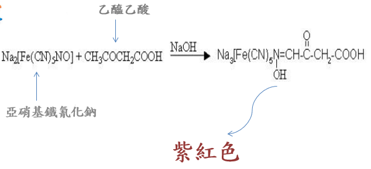

- 一. 分子結構
各酮體所佔的比例:
β-羥丁酸所占比例最高約為78% 乙醯乙酸所占第二約為28% 丙酮最低約為4%
- 二.化學反應式
此反應是不與β-羥丁酸所反應。

- 三.生理意義與正常值範圍
因為我們腦中血腦脹壁的緣故，腦組織要獲得能量只能透過葡萄糖和酮體，那如果這時遇到葡萄糖缺乏時，例如說長時間的禁食，也就是斷食，那這時酮體就能發揮作用，他能讓葡萄糖節省利用，和蛋白質減少水解。
另外酮體還有另外兩個功用:
1. 血糖水平受損時，大腦無法利用脂肪酸，酮體成為能量來源。
2. 長時間飢餓，酮體占大腦能量近2/3。
正常值範圍:
正常的酮體參考值範圍0.5-3.0 mg/dl，當你血中酮體的含量大於0.5mM
和長時間的血糖不穩及低胰島素含量，我們可稱為酮症。
- 四.臨床病理意義及異常原因
生理性酮症是對低葡萄糖可用性的正常反應，例如說在低碳水化合物飲食或是禁食的時候，以酮的形式為大腦提供而外來源。 生理性酮症之所以叫生理性酮症，是因為血液中的酮體提升至基線水平以上，但患者的ph值仍得以維持。
發生情況:
1.新生兒期間、懷孕期間。
2.生酮飲食、長時間運動。
異常原因:
1.葡萄糖減少攝取、脂質增加攝取。
2.先天性代謝缺陷。
病徵:
1.血清酮升高，血糖和血液 pH 值正常。
2.發熱、嘔吐、腹瀉。
2.糖尿病酮症酸中毒(>25mM)
糖尿病酮症酸中毒是一種病理狀態，酮體不受控制的產生，血糖會升高。
發生情況:
1 型糖尿病、晚期 2 型糖尿病患者。
原因:
胰島素缺乏，患者無法調控血糖濃度，需要仰賴酮體做為能源，導致酮體嚴重偏高，因為酮體的偏酸性，患者無法有效調控血液中PH值，導致血中酸中毒。
病徵:
嘔吐、腹痛、排尿增加、神智不清、昏迷、甚至死亡。
- 五.異常時之醫療處置方
• 葡萄糖（血糖）不能進入細胞用作燃料來源。
• 肝臟會產生大量的血糖。
• 脂肪分解太快，身體無法處理。
解決辦法:
• 靜脈輸液
• 注射胰島素
- 六.試紙檢驗量化各顏色定義

對應色碼:
陰性:RGB (247,189,151)、Hex: #F7BD97、HSV (23.8,0.3887,0.9686)
陽性(微量0.5±):RGB (233,154,124)、Hex: #E99A7C、HSV (16.9,0.4721,0.9137)
陽性(輕量1.5±):RGB (235,121,134)、Hex: #EB7986、HSV (353.2,0.4851,0.9216)
陽性(低量4.0±):RGB (191,76,105)、Hex: #BF4C69、HSV (344.9,0.6021,0.7490)
陽性(中量8.0±):RGB (145,38,92)、Hex: #91265C、HSV (329.7,0.7379,0.5686)
陽性(高量16.0±):RGB (110,41,79)、Hex: #6E1F4F、HSV (323.5,0.7182,0.4314)
上面色塊的部分，左邊較偏膚色是較正常的檢驗結國，越往右邊越偏紫色，表示體內中的酮體代謝非常高，也可以解釋身體是呈現脂肪功能狀態。
- 七.酮體的測量方式與比較
氣酮:
身體中的脂肪酸轉化為酮體，約有2~3%的酮體轉化為丙酮，再由嘴巴呼出去。
優點:
• 可多次使用。
• 選擇有精準感測器的氣酮機，在特定條件下測量。
缺點:
• 進食影響準確度的食物(醉雞、咖啡、唇膏、酒精等)。
• 無法測量血糖值。
尿酮:
優點:
• 快速、便宜的檢測方式。
缺點:
• 不夠精確，使用尿酮檢測未檢測出尿酮結果並不表示身體未處於酮症狀態。
• 易受水分多寡影響，水分越多，顏色越淡。
血酮(最準確):
優點:
• 準確了解食物對身體的影響，從而調整飲食，達致目標狀態。
缺點:
• 試紙費用相對昂貴。